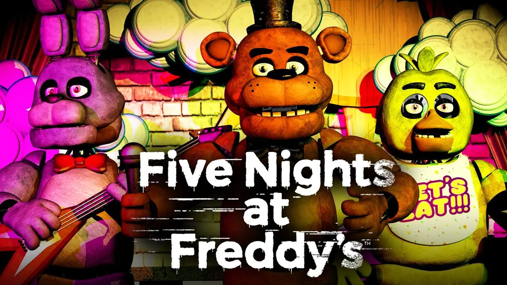

Fredbear's Family Diner
Link to the FNAF Fandom Page. William Afton and Henry opened in 1967 the family friendly Fredbear's Family Diner, featuring a brown furry suit of a bear as a mascot. Henry would usually wear the suit, as they didn't have enough money to hire someone to do the job for a long time and they were studying at the time. William studied engineering and Henry business adminstration and communication.
Link to the FNAF Fandom Page. William met an unnamed woman, with whom he married and three years later had a boy challed Michael. They met in the court; William was being charged for murdering a child that allegedly was crying outside the Diner for being scared of Fredbear, the bear, and she was working selling hot-dogs in from of the building. (Btw, he was released because they didn't have evidences pointing it).
Link to the FNAF Fandom Page. It took them four years to actually achieve any success with the Diner, as they learnt from little Michael that Fredbear was boring. William them designed a new mascot: a yellow furry suit of a rabbit called Bonnie. The chemistry between both characters worked like black magic and the success rained on them like rain in a rainy day.
Link to the FNAF Fandom Page. The amount of money they got was so much, William used it to test his engineering skills, designing the first two Spring Lock suits: which were obviously Bonnie and Fredbear. The success increased.